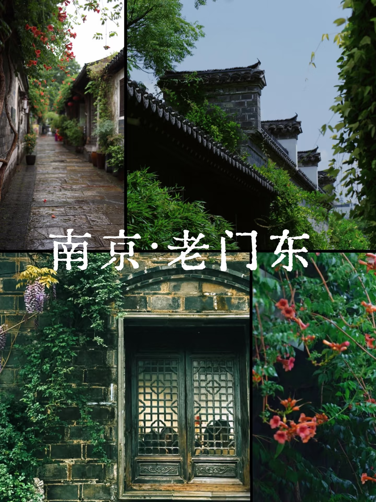
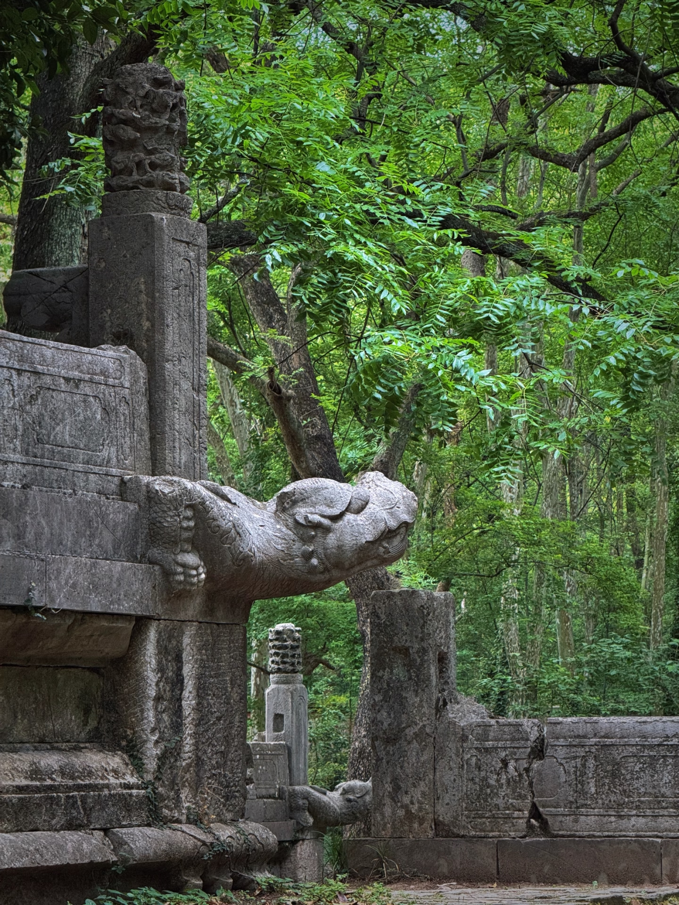
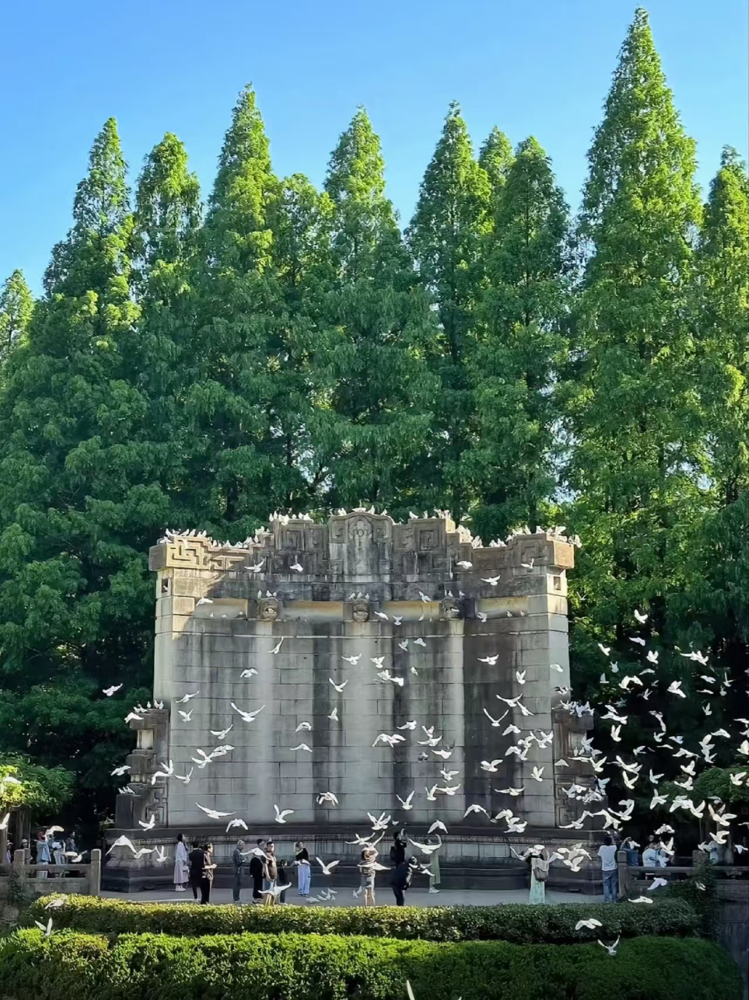
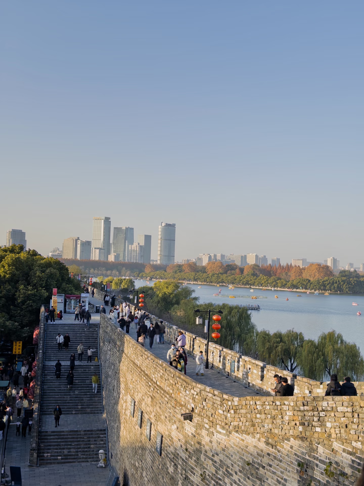
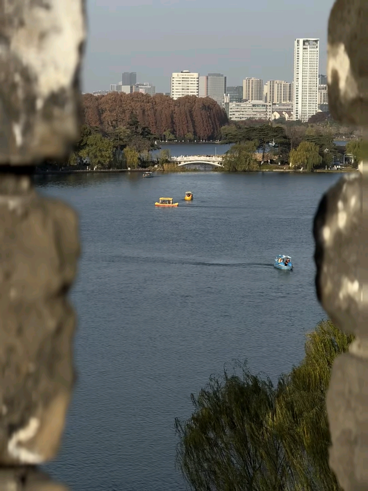
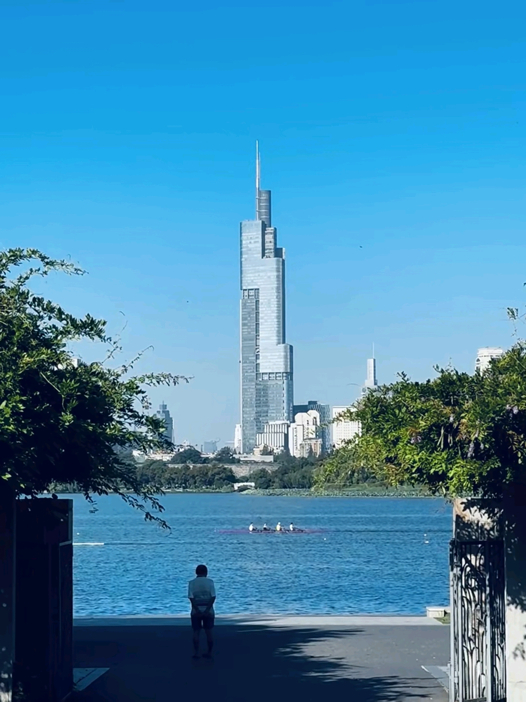
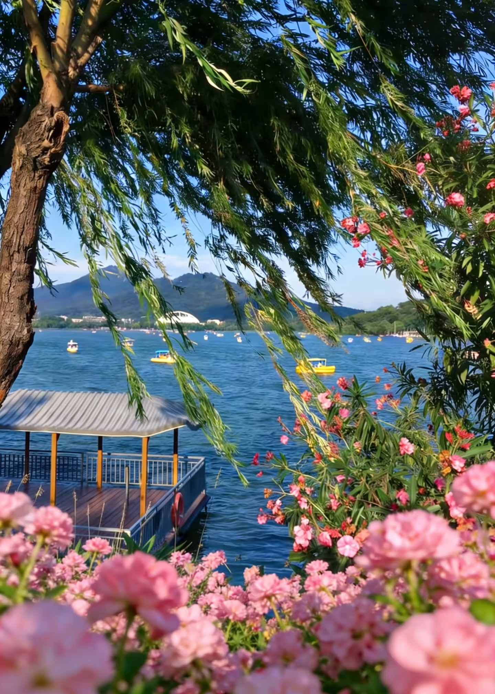
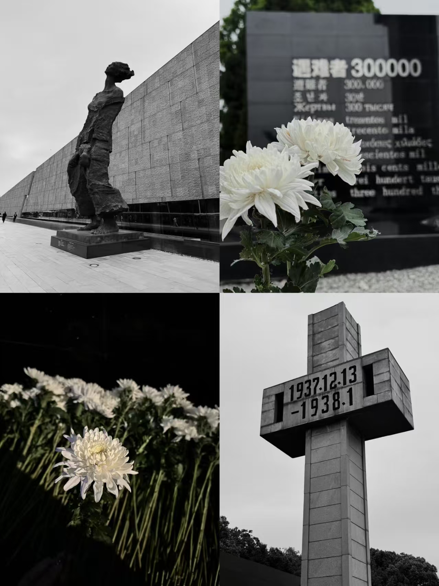
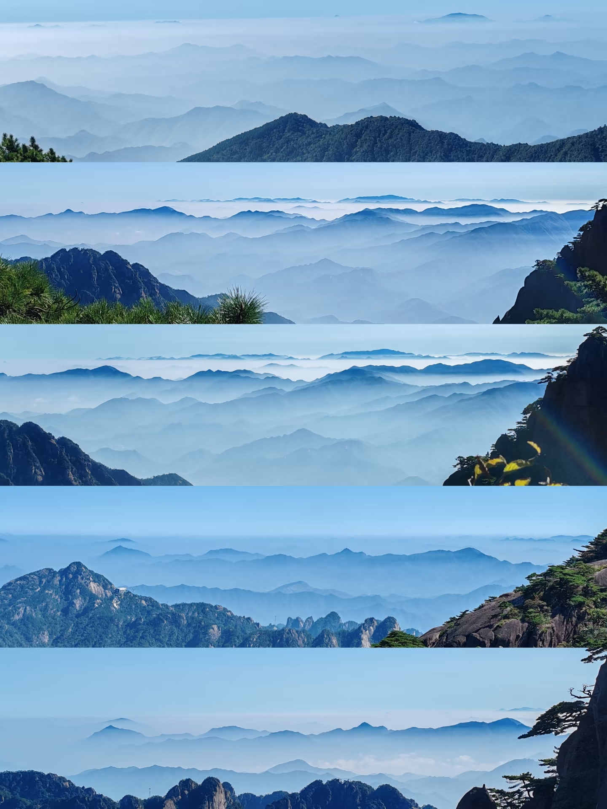

南京黄山之旅宁黄八记
不特种兵 · 无回头路 · 全预约攻略
南京5天（秦淮→钟山→红山→博物院→铭记）+ 黄山3天（赴黄山→登顶→返程） ✨ v16版：动画增强 + 滚动渐显
⏰ Day1 精确时间安排（抵达日）
- 14:00-15:00 酒店入住、放行李（假设下午抵达南京）
- 15:00-15:15 酒店 → 甘熙宅第（步行10分钟）
- 15:15-16:45 甘熙宅第（1.5h）
- 16:45-17:00 甘熙宅第 → 老门东（步行10分钟）
- 17:00-19:00 老门东（逛吃2h，先逛主街再钻小巷）
- 19:00-19:15 老门东 → 夫子庙（步行15分钟）
- 19:15-21:30 夫子庙 + 秦淮河夜游（2h，21:00后灯光最美）
- 21:30 返回酒店
📍 地址：南京市秦淮区南捕厅15号
⏰ 开放时间：9:00-17:00（16:30停止入场）
🎫 门票：25元/人
⏱️ 建议游玩：1.5-2小时
🗺️ 推荐路线：南捕厅门楼→青石砖雕→津逮楼→民俗展厅→后花园假山池塘，全程约1小时
🍴 周边美食：奇芳阁（老字号鸭血粉丝）、莲湖糕团店（赤豆元宵）
🔍 老玩家Tips
- 省体力路线：从老门东步行10分钟，重点看南捕厅、津逮楼
- 最佳拍照点：砖雕门楼、后花园假山池塘，下午光线柔和出片
- 避坑：别请门口黑导，扫码租讲解器20元，比人工便宜
🎒 准备物品
- 舒适步行鞋
- 相机/手机
- 水瓶

📍 地址：南京市秦淮区箍桶巷
⏰ 开放时间：全天，商铺10:00-22:00
🎫 门票：免费
⏱️ 建议游玩：1.5-2小时
🗺️ 推荐路线：箍桶巷主街→三条营巷子（拍照）→城墙下→先锋书店枣子营店→钻小巷寻美食
🍴 周边美食：鸡鸣汤包（蟹黄汤包）、小郑酥烧饼、蒋有记锅贴、蓝老大糖藕粥
🔍 老玩家Tips
- 省体力路线：从明城墙步行10分钟到老门东，先逛主街再钻小巷
- 最佳拍照点：三条营巷子，青石板路+爬藤墙出片
- 避坑：入口排队小吃比巷子里贵30%，往里走
🎒 准备物品
- 空肚子
- 手机支付
- 湿纸巾

📍 地址：南京市秦淮区贡院街
⏰ 开放时间：街区全天，科举博物馆9:00-22:00
🎫 门票：街区免费，科举博物馆50元，夜游画舫100元起
⏱️ 建议游玩：2-3小时
🗺️ 推荐路线：夫子庙照壁→江南贡院→科举博物馆→文德桥→画舫码头登船（东线）
🍴 周边美食：秦淮八绝（永和园）、莲湖糕团店、魁光阁茶社
🔍 老玩家Tips
- 省体力路线：夫子庙→科举博物馆→坐画舫东线，不走回头路
- 最佳拍照点：文德桥拍秦淮河灯影，21:00后灯光更柔和
- 避坑：别在夫子庙买特产，画舫选东线（80元）性价比更高
🎒 准备物品
- 身份证
- 薄外套
- 相机
⏰ Day2 精确时间安排（钟山精华日）
- 8:00-9:00 起床、洗漱
- 9:00-10:00 早餐
- 10:00-10:30 酒店 → 明孝陵（地铁约30分钟）
- 10:30-13:00 明孝陵（2.5h，含神道拍照）
- 13:00-13:30 午餐（景区内简餐）
- 13:30-14:00 明孝陵 → 中山陵（观光车10分钟）
- 14:00-16:30 中山陵 + 音乐台（2.5h，整点看白鸽群飞）
- 16:30-17:00 中山陵 → 颐和路（打车约25分钟）
- 17:00-18:30 梧桐大道（1.5h，下午光影最佳）
- 18:30-19:00 梧桐大道 → 南大（骑行或打车10分钟）
- 19:00-20:30 南大鼓楼校区（可选，不去则改为新街口逛街）
- 20:30 晚餐 / 新街口夜宵

🎫 门票：70元/人（含梅花山）
⏱️ 建议游玩：2.5-3小时
🗺️ 推荐路线：下马坊→大金门→神道（石象路）→四方城→明孝陵陵宫→梅花山，全程约2.5小时
🍴 周边美食：陵宫路快餐、琵琶湖景区农家乐（需出景区）
🔍 老玩家Tips
- 省体力路线：下马坊→大金门→神道→明孝陵陵宫→美龄宫，坐观光车衔接
- 最佳拍照点：石象路10-11点侧光，美龄宫"最美项链"航拍位在明孝陵入口对面
🎫 门票：免费（需预约），音乐台10元
⏱️ 建议游玩：2-3小时
🗺️ 推荐路线：陵园路→中山陵入口→392级台阶→祭堂→孙中山纪念馆→音乐台（整点喂鸽）
🍴 周边美食：陵园快餐（景区内）、中山陵附近的民国往事民国菜
🔍 老玩家Tips
- 省体力路线：中山陵→音乐台→美龄宫，坐观光车10元/段
- 最佳拍照点：中山陵顶端俯瞰金陵，音乐台整点白鸽群飞


🚐 景区观光车：明孝陵景区内→中山陵停车场，10元/段，约10分钟（建议乘坐，省体力）
🚕 打车：约3公里，15分钟，约15元
🚶 步行：约25分钟，景区内步行道，沿途风景好但较累
⚠️ 注意：建议坐观光车，两景区间有山路，步行较累；下午去中山陵光线好
📍 地址：南京市鼓楼区颐和路
⏱️ 建议游玩：1.5-2小时（下午光影最佳）
🗺️ 推荐路线：宁海路→颐和路→江苏路→西康路→天目路，骑行或步行沿梧桐林荫道
🍴 周边美食：民国往事民国菜（颐和路）、绿柳居（素菜）、蓉点语法甜
🔍 老玩家Tips
- 省体力路线：中山陵打车20分钟直达，骑行沿宁海路→颐和路→江苏路
- 最佳拍照点：下午3-4点梧桐光影，11号论坛可进


🚲 骑行：约10分钟，颐和路→北京西路→南大，全程梧桐隧道
🚕 打车：约3公里，10分钟，约12-15元
🚇 地铁：4号线云南路站（往龙江方向）→鼓楼站，1站，5号口出，2元
🚌 公交：65路/48路（颐和路站上车，往北京西路方向），南大鼓楼校区站下车，约15分钟，2元
⚠️ 注意：骑行最浪漫，沿途梧桐树隧道；地铁最快且准时
🎫 门票：均免费
⏱️ 建议游玩：2-3小时
🗺️ 推荐路线：南大校门→北大楼→体育馆→逸夫馆→先锋书店（不只书店还有咖啡）
🍴 周边美食：南大食堂（需校园卡）、小粉桥猪脚饭、陶谷新村美食街
🔍 老玩家Tips
- 省体力路线：梧桐大道→南大鼓楼校区→北大楼→先锋书店步行10分钟
- 最佳拍照点：北大楼爬藤墙，先锋书店十字架收银台
🛍️ 逛吃推荐：新街口商圈（Day2 可选）
- 🛒 商场：德里广场（奢侈品+负一楼美食）、新百、中央商场、艾尚天地
- 🍜 美食：明瓦廊美食街（烤冷面、臭豆腐、锅贴）、小潘记鸭血粉丝
- ☕ 咖啡：德里广场6楼网红窗景、星巴克甄选
- 🕐 时间：建议17:00后前往，逛2-3小时+晚餐
- 📍 位置：南大出来步行10分钟，或地铁1站
⏰ Day3 精确时间安排（方案A：红山+城墙）
- 8:00-9:00 起床、洗漱
- 9:00-9:30 酒店 → 红山动物园（地铁约30分钟）
- 9:30-13:00 红山动物园（3.5h，北门进南门出）
- 13:00-13:30 午餐
- 13:30-14:15 红山 → 玄武湖/鸡鸣寺（地铁约35分钟）
- 14:15-15:00 酒店休息1小时（恢复体力）
- 15:00-17:00 玄武湖（散步/划船2h）
- 17:00-18:30 鸡鸣寺（1.5h，傍晚光线极美）
- 18:30 晚餐 / 老门东夜逛
- 💪 精力旺盛者可选夜骑：19:30出发，顺时针环湖约9km（约1.5h）
⏰ Day3 精确时间安排（方案B：城墙休闲）
- 9:00-10:00 自然醒、早餐
- 10:00-11:30 颐和路再逛（上午人少）
- 11:30-12:30 午餐
- 12:30-13:00 前往鸡鸣寺
- 13:00-14:30 鸡鸣寺 + 台城城墙（1.5h）
- 14:30-17:00 玄武湖骑行/泛舟（2.5h，轻松往返）
- 17:00 晚餐

🎫 门票：40元/人
⏱️ 建议游玩：3-4小时（上午9:00-13:00）
🗺️ 推荐路线：北门入口→大熊猫馆→考拉馆→长颈鹿馆→猴山→熊馆→狼馆→南门出口
🍴 周边美食：红山动物园门口快餐、玄武湖樱苑茶社（需去玄武湖）
🔍 老玩家Tips
- 省体力路线：北门→大熊猫馆→考拉馆→长颈鹿馆→猴山→南门
- 最佳拍照点：大熊猫"和和""平平"上午9点前最活跃
🚇 地铁：1号线红山动物园站（往奥体中心方向）→鼓楼站换乘4号线（往仙林湖方向）→鸡鸣寺站，5号口出，共5站，约30分钟，3元
🚌 公交：30路/54路（红山森林动物园站上车，往建宁路方向）→鸡鸣寺站，约40分钟，2元（不推荐，需换乘）
🚕 打车：约8.5km，25分钟，28-32元，4人拼车人均7-8元
⚠️ 注意：早高峰地铁拥挤，建议8:30前出发；下午建议直接去玄武湖，从鸡鸣寺步行5分钟即可到达
📍 地址：南京市玄武区鸡鸣寺路1号
⏰ 开放时间：7:00-17:30
🎫 门票：10元/人
⏱️ 建议游玩：1-1.5小时
🗺️ 推荐路线：山门→天王殿→大雄宝殿→药师佛塔→豁蒙楼→明城墙出口，全程约1小时
🍴 周边美食：鸡鸣寺素面（寺内）、百味斋素菜馆、玄武湖公园内樱苑
🔍 老玩家Tips
- 最佳拍照点：药师佛塔拍紫峰大厦同框
- 傍晚时分光线极美，可拍日落

📍 地址：南京市玄武区太平门路64号
⏰ 开放时间：8:30-17:30
🎫 门票：30元/人
⏱️ 建议游玩：1-1.5小时
🗺️ 推荐路线：解放门登城→城墙东段→玄武门方向→俯瞰玄武湖全景→玄武门出
🍴 周边美食：玄武湖公园内樱苑茶社、郭师傅糕团
🔍 老玩家Tips
- 最佳拍照点：从城墙上俯瞰玄武湖全景，日落时分最美
- 可以从解放门登城，走一段后从玄武门下来
🎒 准备物品
- 防晒
- 相机


📍 地址：南京市玄武区玄武湖公园
⏰ 开放时间：全天开放
🎫 门票：免费
⏱️ 建议游玩：1-2小时
🗺️ 推荐路线：解放门→环湖路→樱洲（春季樱花）→梁洲→翠洲→玄武门，全程约1.5小时
🍴 周边美食：樱苑茶社（湖景下午茶）、郭师傅糕团、环湖小木屋美食街
🔍 老玩家Tips
- 推荐路线：从解放门进入 → 沿环湖路散步或骑行
- 💪 精力旺盛者可选夜骑：19:30从解放门出发，顺时针环湖约9km
- 最佳拍照点：环湖路看日落，樱洲看花海


🎫 门票：鸡鸣寺10元，台城城墙30元，玄武湖免费
⏱️ 建议游玩：2-3小时
🔍 老玩家Tips
- 省体力路线：鸡鸣寺→登药师佛塔→台城城墙→玄武湖
- 最佳拍照点：鸡鸣寺拍紫峰大厦同框，台城拍玄武湖全景
- 💪 精力旺盛者可选夜骑：19:30解放门顺时针环湖（约9km）
⏰ Day4 精确时间安排（博物日）
- 8:00-9:00 起床、洗漱
- 9:00-9:45 早餐 + 前往南博（地铁约30分钟）
- 9:45-13:00 南京博物院（3h+，9点开馆尽量早到）
- 13:00-14:00 午餐 + 休息（中山东路附近）
- 14:00-14:15 南博 → 总统府（步行15分钟）
- 14:15-17:00 总统府（2.5h）
- 17:00 1912街区晚餐/新街口逛街（总统府出门即到）
📍 地址：南京市玄武区中山东路321号
⏰ 开放时间：9:00-17:00，周一闭馆
🎫 门票：免费（必须提前预约）
⏱️ 建议游玩：3-4小时
🗺️ 推荐路线：历史馆→特展馆（镇馆之宝）→艺术馆→民国馆（网红打卡）→非遗馆，全程约3小时
🍴 周边美食：南博内民国生活馆咖啡、中山东路沿线的南京大排档、小厨娘淮扬菜
🔍 老玩家Tips
- 省体力路线：历史馆→特展馆→艺术馆→民国馆→非遗馆
- 最佳拍照点：民国馆复古街道，历史馆旋转楼梯光影绝美

🚶 步行：约15分钟，中山东路直走，梧桐遮阴，沿途经过南京图书馆
🚇 地铁：2号线明故宫站（往油坊桥方向）→大行宫站，1站，3号口出，2元
🚌 公交：65路/29路（中山东路站上车），大行宫北站下车，约10分钟，2元
🚕 打车：约2公里，5分钟，约11元
💡 建议：出南博后在中山东路附近午餐休息1小时再出发；步行最浪漫，沿途梧桐树
🎫 门票：40元/人（需预约）
⏱️ 建议游玩：2-3小时
🗺️ 推荐路线：门楼→大堂→东楼→子超楼→煦园（园林）→孙中山办公室→西楼→太平天国史料展
🍴 周边美食：1912街区民国建筑群内酒吧餐厅、边上科巷菜场（本地人美食）、鸿福面馆
🔍 老玩家Tips
- 省体力路线：门楼→大堂→子超楼→煦园→孙中山办公室
- 最佳拍照点：子超楼民国风楼梯，煦园江南园林漏窗
- 🏙️ 出总统府即到1912街区，民国建筑酒吧街，适合晚餐


🛍️ 逛吃推荐：1912街区+新街口（Day4 可选）
- 🌆 1912街区：总统府出门即到，民国建筑风格酒吧街，适合晚餐+散步
- 🛒 新街口商圈：德里广场、新百、中央商场，打车10分钟
- 🍜 晚餐推荐：科巷菜场（本地人美食）、鸿福面馆、南京大排档
- 🛍️ 购物：德里负一楼伴手礼、新百/中央折扣款
- 🕐 时间：17:00后逛1912街区晚餐，19:00后可去新街口夜逛
⏰ Day5 精确时间安排（铭记+治愈）
- 8:00-10:00 自然醒、懒散早餐
- 10:00-12:00 上午自由活动（补觉/逛店/拍照）
- 12:00-13:00 午餐
- 13:00-13:30 前往纪念馆（地铁约30分钟）
- 13:30-16:00 纪念馆（2.5h，保持肃穆）
- 16:00-17:00 建邺万达晚餐（调整情绪）
- 17:30 晚餐 / 南京眼夜景（若下午选了②）
🎫 门票：免费（必须提前预约）
⏱️ 建议游玩：2-3小时
🗺️ 推荐路线：史料陈列厅（常设展）→万人坑遗址→冥思厅（静思）→和平公园，全程约2小时
🍴 周边美食：建邺万达餐饮区（调整情绪）、云锦路站周边快餐
🔍 老玩家Tips
- 省体力路线：入口→史料陈列厅→"万人坑"遗址→冥思厅
- 馆内保持肃穆，禁止拍照

🗺️ 去南京眼/保利：2号线云锦路站（往油坊桥方向）→元通站换乘10号线（往雨山路方向）→绿博园站，2号口出，步行10分钟到南京眼，共约25分钟，4元
🗺️ 去金鹰世界：2号线云锦路站→元通站，5号口出直达金鹰世界，共约20分钟，3元
🗺️ 去云锦博物馆：2号线云锦路站（往油坊桥方向）→集庆门大街站，6号口出，步行5分钟，共约15分钟，3元
🚕 打车：到南京眼约6km，15分钟，约20元；到金鹰约8km，20分钟，约25元
⚠️ 注意：地铁换乘注意方向；晚高峰建议打车
🌿 下午治愈三选一（全部同方向，轻松收尾）
- ① 南京云锦博物馆（免费，室内，安静华美）
- ② 南京眼步行桥+保利大剧院（新城风貌，拍照圣地）
- ③ 河西金鹰世界/华采天地逛街（现代商场+晚餐）
- 若选②，晚上可继续看南京眼夜景
① 南京云锦博物馆：免费，室内，安静华美
🗺️ 路线：织锦车间→云锦精品展→文创商店，约30分钟
🍴 美食：云锦博物馆周边无餐饮，建议去金鹰
② 南京眼步行桥+保利大剧院：新城风貌，拍照圣地
🗺️ 路线：南京眼步行桥→保利大剧院外景→青年文化公园，日落时分最美
🍴 美食：保利大剧院旁商业街、河西金鹰（需打车10分钟）
③ 河西金鹰世界/华采天地：现代商场+晚餐
🗺️ 路线：金鹰世界顶层花园→美食广场→华采天地
🍴 美食：捞王锅物料理、桂满陇、小厨娘
⏰ Day6 精确时间安排（转场日）
- 8:00-9:30 自然醒、早餐
- 9:30-11:30 上午自由（科巷/颐和路/长江大桥三选一）
- 11:30-12:30 午餐
- 12:30-13:00 前往南京南站（地铁约30分钟）
- 13:00-13:30 候车上车
- 13:30-15:30 🚄南京南 → 黄山北（2h）
- 15:30-16:30 黄山北 → 汤口镇（大巴/打车约40分钟）
- 16:30-17:00 酒店入住
- 17:00-18:30 汤口镇逛逛
- 18:30 徽菜晚餐
📝 活动：自然醒，补美食，买伴手礼
方案A：科巷菜场（本地人早餐圣地）
方案B：颐和路再骑行
方案C：南京长江大桥玻璃栈道
📍 车次：南京南→黄山北，中午前后，约2小时
🎫 票价：二等座约150-180元
📝 提示：晚上吃徽菜，补充次日登山补给
⏰ Day7 精确时间安排（黄山登顶日）
- 6:30-7:00 早起（索道日需早）
- 7:00-7:30 早餐
- 7:30-8:00 酒店 → 换乘中心 → 云谷索道
- 8:00-8:20 云谷索道上山
- 8:20-12:00 白鹅岭→始信峰→北海→光明顶（3.5h，边走边拍）
- 12:00-12:30 光明顶午餐（自带干粮）
- 12:30-14:30 光明顶→鳌鱼峰→迎客松（2h）
- 14:30-15:00 迎客松拍照 ⚠️ 务必15:00前离开
- 15:00-16:30 步行至玉屏索道 ⚠️ 末班约17:00！
- 16:30-17:00 玉屏索道下山
- 17:00-17:30 返回酒店休息
- 18:30 徽菜晚餐，好好犒劳自己

🎫 索道票：云谷80元，玉屏90元（提前购）
📍 路线：云谷上→白鹅岭→始信峰→光明顶→迎客松→玉屏下
⏱️ 全程：6-7小时
⚠️ 玉屏索道末班约17:00，16:30前务必到达索道站
🗺️ 推荐路线：云谷寺→白鹅岭（索道10分钟）→始信峰（北海景区）→黑虎松→光明顶（午餐）→鳌鱼峰→迎客松→玉屏楼→玉屏索道下
🍴 餐饮建议：山顶无正式餐厅，需自带干粮；光明顶有简易小卖部
🔍 老玩家Tips
- 省体力路线：云谷索道上→始信峰→光明顶→迎客松→玉屏索道下
- 最佳拍照点：始信峰"梦笔生花"，光明顶360度全景
- 山下登山杖10-20元，省30%体力


📝 活动：下山后直接回酒店休息，晚上在汤口吃徽菜
🗺️ 路线：玉屏索道→换乘中心→酒店（约15分钟车程）
🍴 周边美食：徽州菜馆（毛豆腐、臭鳜鱼）、老街口土菜馆、汤口镇美食街
⏰ Day8 精确时间安排（返程日）
- 8:30-9:30 自然醒、早餐
- 9:30-12:00 汤口周边闲逛+买伴手礼（翡翠谷/九龙瀑可选）
- 12:00-13:00 午餐
- 13:00-13:30 退房
- 13:30-14:30 汤口 → 黄山北站（约40分钟）
- 下午/傍晚 🚄 返程高铁
📝 活动：睡到自然醒，可在汤口周边逛逛（翡翠谷、九龙瀑可选），买黄山毛峰、徽墨酥等伴手礼
雨天备选：翡翠谷/九龙瀑雨天更壮观
🚗 交通：下午汤口→黄山北站（约40分钟）
🚄 高铁：傍晚车次，返回出发地
🍜 吃喝逛 · 城市漫游指南
🍜 南京必吃美食（按区域分类）
📍 夫子庙/老门东区域
- 🔸 蒋有记锅贴（老门东三条营） - 牛肉锅贴外脆里嫩，人均25元
- 🔸 黄勤记凉粉（老门东） - 酸辣凉粉爽口，15元
- 🔸 鸡鸣汤包（老门东） - 蟹黄汤包必点，35元
- 🔸 莲湖糕团店（贡院街） - 赤豆元宵、糖芋苗，10元
- 🔸 小郑酥烧饼（老门东） - 梅干菜口味，5元/个
📍 新街口/珠江路区域
- 🔸 小潘记鸭血粉丝汤（珠江路） - 本地人最爱，汤鲜料足，25元
- 🔸 李记清真馆（打钉巷） - 锅贴排队王，牛肉馄饨
- 🔸 芳婆糕团店（王府大街） - 乌饭团、糖芋苗，10元
- 🔸 明瓦廊美食街 - 美食聚集地，臭豆腐、烤冷面
📍 其他必打卡
- 🔸 绿柳居（太平南路） - 素菜包、牛肉锅贴，老字号
- 🔸 四川酒家（太平南路） - 地道川菜，性价比高
- 🔸 南京大排档（多家分店） - 盐水鸭、烤鸭包、鸭血粉丝
🍲 黄山徽菜推荐
📍 汤口镇美食街
- 🔸 徽州菜馆 - 招牌臭鳜鱼（80元）、毛豆腐（30元）
- 🔸 老街口土菜馆 - 本地人常去，性价比高
- 🔸 聚龙徽州宴 - 环境好，徽菜正宗
🍡 必尝小吃
- 🔸 黄山烧饼 - 梅干菜肉馅，酥脆可口，10元/袋
- 🔸 徽墨酥 - 墨形甜点，黑芝麻味
- 🔸 野生葛根粉 - 冲调饮品，清热下火
⚠️ 温馨提示：徽菜偏油偏咸，肠胃敏感者酌情点菜
🏙️ 商场/街区推荐
🛒 新街口（亚洲最大商圈）
- 🔸 徳基广场 - 奢侈品齐全，负一楼美食层
- 🔸 新百/中央商场 - 接地气，折扣多
- 🔸 艾尚天地 - 年轻潮流品牌
- 🔸 明瓦廊小吃街 - 接地气美食，人均20元
🏮 老门东（历史文化街区）
- 🔸 先锋书店骏惠书屋 - 网红打卡，书籍文创
- 🔸 秦淮礼物文创店 - 伴手礼选择
- 🔸 德云社（老门东） - 相声演出
🍺 1912街区（民国酒吧街）
- 🔸 总统府隔壁，民国建筑风格
- 🔸 酒吧、餐厅、咖啡馆聚集
- 🔸 适合晚餐+饭后散步
🌆 河西新城
- 🔸 金鹰世界 - 顶层花园+美食广场
- 🔸 华采天地 - 设计感强，餐饮丰富
- 🔸 南京眼步行桥 - 夜景超美
🌙 可选晚场（按天推荐）
- Day1 秦淮夜游画舫（80元东线）+ 夫子庙商圈
- Day2 新街口夜逛 + 明瓦廊夜宵 + 徳基广场看夜景
- Day3 老门东夜逛（先锋书店骏惠书屋19:00关门）
- Day4 1912街区晚餐（总统府出门即到，民国建筑酒吧街）
- Day5 南京眼夜景（若下午选了②）+ 河西金鹰晚餐
🎁 伴手礼指南
🛍️ 南京伴手礼
- 🔸 泸溪河桃酥 - 各店均有，酥松可口，30元/盒
- 🔸 韩复兴盐水鸭 - 真空包装方便，40元/只
- 🔸 秦淮礼物文创 - 夫子庙景区，冰箱贴、书签
- 🔸 金陵折扇 - 传统工艺品，50-100元
🛍️ 黄山伴手礼
- 🔸 黄山毛峰 - 中国十大名茶，80-200元/盒
- 🔸 徽墨酥 - 特色甜点，15元/盒
- 🔸 太平猴魁 - 绿茶珍品，100元+/盒
- 🔸 石耳/香菇 - 山珍干货，馈赠佳品
🏨 住宿安排
🏙️ 南京段（Day1 - Day5，共5晚）
📍 推荐区域：夫子庙/新街口/大行宫地铁站附近
🏨 状态：🔴 待预订
💰 预算参考：300-500元/晚
🏨 推荐酒店
- 🔸 全季酒店（夫子庙店）- 近地铁3号线，含早餐
- 🔸 亚朵酒店（新街口店）- 品质保证，装修新
- 🔸 漫心酒店（大行宫店）- 近总统府、南博
- 🔸 桔子水晶（秦淮店）- 智能化设施
💡 选房建议
- ✅ 近地铁3号线，可直达南博、总统府、夫子庙
- ✅ 避开临街低层，防噪音
- ✅ 建议含早餐，省去早上找吃的麻烦
- ✅ 提前1周预订，节假日可能涨价
⛰️ 黄山段（Day6 - Day7，共2晚）
📍 位置：必须选"黄山景区汤口镇"，不是"黄山市区（屯溪）"
🏨 状态：🔴 待预订
💰 预算参考：200-400元/晚
🏨 推荐酒店
- 🔸 桔子水晶酒店（汤口店）- 位置好， near换乘中心
- 🔸 黄山云天度假酒店 - 山景房，可看云雾
- 🔸 徽州印象酒店 - 徽派装修，干净舒适
- 🔸 亚卡酒店（汤口店）- 性价比高
💡 选房建议
- ✅ 务必选"汤口"而非"屯溪"，相差20公里！
- ✅ 选换乘中心附近的酒店，方便第二天早上上山
- ✅ 提前订可找山景房，清晨云雾超美
- ✅ 建议选含早餐的酒店，上山前吃饱
✈️ Day8 返程日
无住宿。若返程车次较晚，可考虑以下选项：
- 🔸 黄山北站附近钟点房（50-80元/3小时）
- 🔸 屯溪老街逛逛（距离黄山北站15分钟车程）
- 🔸 黎阳in巷 - 文艺街区，适合拍照
📝 预订时间建议
- 🔸 南京酒店：出发前1周预订，周末/节假日提前2周
- 🔸 黄山酒店：出发前2周预订，节假日需提前1个月
- 🔸 建议用携程/飞猪/美团比价，常有优惠券
🎒 行李清单
📄 证件类（必带）
- 身份证（入住、景区入园必备）
- 学生证（景点半价，需核对有效期）
- 医保卡（以备不时之需）
- 重要景区预约成功截图（南博、纪念馆等）
🏙️ 南京·城市出行篇
- 舒适平底鞋/小白鞋（日均步行1万+，拒绝新鞋）
- 防晒帽（宽檐帽最佳）
- 墨镜（防晒+拍照）
- 防晒霜 SPF50+
- 折叠伞（防雨+防晒）
- 薄外套（空调房、防晒）
- 湿纸巾/免洗洗手液
- 充电宝（景区拍照耗电快）
⛰️ 黄山·登山保命篇
- 防滑登山鞋（拒绝高跟鞋/板鞋/新鞋）
- 登山杖（山下10-20元，省30%体力）
- 一次性雨衣（山风大，禁打伞）
- 双肩背包（解放双手）
- 护膝（下台阶保护膝盖，推荐）
- 保暖帽（山顶风大，防头痛）
- 保暖手套（秋冬季节）
🔌 电子设备
- 手机 + 充电器
- 充电宝（20000毫安以下可带上飞机）
- 耳机（坐车/排队解闷）
- 相机（可选，黄山拍照很出片）
💊 日用药品（推荐带）
- 肠胃药（适应徽菜重油）
- 晕车药（山路多弯）
- 创可贴（徒步防磨脚）
- 风油精（防蚊虫）
- 感冒药（山顶温差大）
📄 证件类（必带）
- 身份证
- 学生证
- 医保卡
- 重要景区预约成功截图
🏙️ 南京·城市出行篇
- 舒适平底鞋/小白鞋
- 防晒帽
- 墨镜
- 防晒霜
- 折叠伞
- 薄外套
- 湿纸巾
⛰️ 黄山·登山保命篇
- 防滑登山鞋
- 登山杖
- 一次性雨衣
- 双肩背包
- 护膝
- 保暖帽
🔌 电子设备
- 手机 + 充电器
- 充电宝
- 耳机
- 相机（可选）
💰 预算清单
📌 学生半价优惠（固定）
| 景点 | 原价 | 学生价 | 省多少 |
|---|---|---|---|
| 明孝陵 | 70元 | 35元 | -35元 |
| 音乐台 | 10元 | 5元 | -5元 |
| 红山动物园 | 40元 | 20元 | -20元 |
| 台城城墙 | 30元 | 15元 | -15元 |
| 总统府 | 40元 | 20元 | -20元 |
| 黄山门票 | 190元 | 95元 | -95元 |
🎓 免票：中山陵、南博、纪念馆、玄武湖
📊 总预算一览
| 🚗 交通总计 | 286元 |
| 🏨 住宿总计 | 1220元 |
| 🍜 餐饮总计 | 875元 |
| 🎫 门票总计 | 395元 |
| 💰 总预算 | 2776元 |
📋 每日预算明细（点击标题展开/收起，点数字可编辑）
🚗 交通：5元（可编辑）
🏨 住宿：150元（可编辑）
🍜 餐饮：95元（可编辑）
🎫 门票：25元（甘熙宅第）
🚗 交通：28元（可编辑）
🏨 住宿：150元（可编辑）
🍜 餐饮：115元（可编辑）
🎫 门票：40元（明孝陵35+音乐台5）
🚗 交通：6元（可编辑）
🏨 住宿：150元（可编辑）
🍜 餐饮：110元（可编辑）
🎫 门票：45元（红山动物园20+鸡鸣寺10+台城城墙15）
🚗 交通：3元（可编辑）
🏨 住宿：150元（可编辑）
🍜 餐饮：115元（可编辑）
🎫 门票：20元（总统府）
🚗 交通：6元（可编辑）
🏨 住宿：150元（可编辑）
🍜 餐饮：115元（可编辑）
🎫 门票：0元（纪念馆+云锦博物馆免费）
🚗 交通：175元（高铁150+大巴25，可编辑）
🏨 住宿：120元（可编辑）
🍜 餐饮：120元（可编辑）
🎫 门票：0元（无）
🚗 交通：38元（景区交通，可编辑）
🏨 住宿：120元（可编辑）
🍜 餐饮：135元（可编辑）
🎫 门票：265元（黄山门票95+云谷索道80+玉屏索道90）
🚗 交通：25元（汤口→黄山北，可编辑）
🏨 住宿：0元（无）
🍜 餐饮：55元（可编辑）
🎫 门票：0元（无）
💡 省钱建议
- 🔸 住宿选青旅床位可省50元/晚
- 🔸 餐饮以路边摊+便利店为主
- 🔸 交通优先地铁，打车用拼车
- 🔸 务必带学生证！部分景区需身份证+学生证同时出示
⚠️ 避坑须知
🗼 南京避坑指南
🚫 夫子庙区域
- ❌ 别在夫子庙景区内买特产（价格虚高）
- ❌ 别坐高价画舫（选80元东线即可）
- ❌ 别买景区门口切块水果（不新鲜）
- ✅ 老门东往里走，小吃更便宜更地道
- ✅ 吃饭去科巷/红庙，本地人常去
🚫 景点预约
- ❌ 别轻信闲鱼代预约（容易被骗）
- ✅ 南京博物院/纪念馆必须自己抢
- ✅ 提前7天0点准时蹲守，成功率最高
🚫 交通出行
- ❌ 别坐火车站附近黑车（不安全）
- ✅ 优先选择地铁，便宜且不堵车
- ✅ 打车用滴滴/高德，明确目的地
⛰️ 黄山避坑指南
🚫 门票与交通
- ❌ 拒绝黄牛/野导，只在官方小程序购票
- ❌ 别相信拉客的司机推荐的"优惠票"
- ✅ 门票、索道、景交车必须提前在"黄山旅游官方平台"购买
- ✅ 山上酒店有限，务必提前1个月预订
🚫 登山注意事项
- ❌ 禁止打伞（山风大，易被吹倒）
- ❌ 不要穿高跟鞋/板鞋（防滑很重要）
- ❌ 不要轻信"抄近路"（容易迷路）
- ✅ 山上物资贵，自带干粮和水
- ✅ 水10元/瓶，可自带水杯接开水
🚫 住宿与餐饮
- ❌ 别住屯溪市区（离景区远）
- ✅ 务必住汤口镇换乘中心附近
- ✅ 徽菜偏油咸，肠胃敏感者提前说明
⏰ 时间安排避坑
- ❌ 不要周一去中山陵/总统府（周一闭馆）
- ❌ 不要周一去南京博物院（周一闭馆）
- ✅ 南博/纪念馆提前7天0点蹲守
- ✅ 黄山玉屏索道16:30前务必到达
- ✅ 早高峰8:30前坐地铁，人少不挤
🌧️ 雨天备选方案
📍 南京室内景点
- 🔸 六朝博物馆 - 千年历史，拍照出片
- 🔸 江宁织造博物馆 - 红楼梦主题
- 🔸 大报恩寺遗址 - 玻璃塔震撼
- 🔸 总统府室内展区 - 风雨无阻
📍 黄山雨天
- 🔸 翡翠谷 - 雨天更壮观，彩池绝美
- 🔸 九龙瀑 - 瀑布雨天水量大
- 🔸 宏村/西递 - 徽派古村，雨中诗意
- 🔸 屯溪老街 - 室内逛徽州故事
📝 预约清单
🗼 南京必预约景点（提前1-7天）
⚠️ 紧张程度：★★★
- 📍 南京博物院 - 免费，周一闭馆
难度：⭐⭐⭐⭐⭐ 最难约！
攻略：提前7天0点（如周四去，周四0点抢）准时蹲守
预约：搜索"南京博物院"公众号或小程序 - 📍 纪念馆 - 免费，周一闭馆
难度：⭐⭐⭐⭐⭐ 同上最难约
攻略：提前7天0点蹲守，与南博同时段
预约：搜索"侵华日军南京大屠杀遇难同胞纪念馆"公众号 - 📍 中山陵 - 免费，周一闭馆
难度：⭐⭐⭐ 较容易
攻略：提前1-3天即可，约满概率低
预约：搜索"钟山风景区"小程序 - 📍 总统府 - 40元，周一闭馆
难度：⭐⭐⭐ 较容易
攻略：提前2-3天，周末建议提前更多
预约：搜索"南京总统府"公众号
⛰️ 黄山必预约（提前3-7天）
⚠️ 紧张程度：★★
- 📍 黄山风景区门票 - 190元/人
难度：⭐⭐ 提前3-5天即可
预约：搜索"黄山旅游官方平台"小程序
注意：选择云谷/玉屏索道上山方向 - 📍 云谷索道 - 80元/人
预约：与门票同在小程序购买
注意：建议选择云谷上（体力省一半） - 📍 玉屏索道 - 90元/人
预约：与门票同在小程序购买
⚠️ 注意：末班约17:00，务必16:30前到达！ - 📍 景区换乘车 - 19元/人/次
说明：必买，景区大门到索道站
🚄 交通预约
- 📍 高铁票 - 提前15天开售
南京→黄山：推荐G7317等车次，约3小时
黄山→各地：提前关注余票
📋 预约时间一览表
| 景点 | 提前天数 | 开放时间 | 闭馆日 |
|---|---|---|---|
| 南京博物院 | 7天 | 9:00-17:00 | 周一 |
| 纪念馆 | 7天 | 8:30-16:30 | 周一 |
| 中山陵 | 3天 | 8:30-17:00 | 周一 |
| 总统府 | 3天 | 8:30-17:30 | 周一 |
| 黄山门票 | 5天 | 全天 | 无 |
🆘 应急联系卡
🗼 南京紧急电话
- 📞 报警：110
- 📞 急救：120
- 📞 火警：119
- 📞 中山陵园风景区：025-84461111
- 📞 南京总统府：025-84578700
- 📞 南京博物院：025-84807923
- 📞 南京市第一医院：025-52213000
⛰️ 黄山紧急电话
- 📞 报警：110
- 📞 急救：120
- 📞 黄山景区咨询：0559-5561111
- 📞 黄山风景区救援：0559-5560110
- 📞 黄山北站：0559-5562666
- 📞 黄山景区医院：0559-5580120
🏥 医院与药店
📍 南京主要医院
- 🔸 南京市第一医院 - 秦淮区
- 🔸 江苏省人民医院 - 鼓楼区
- 🔸 南京鼓楼医院 - 鼓楼区
📍 黄山主要医院
- 🔸 黄山市人民医院 - 屯溪区
- 🔸 黄山风景区医院 - 汤口镇
💊 建议随身带
- 🔸 肠胃药、创可贴、晕车药
🚕 常用出行APP
- 🔸 地铁：南京地铁APP / 我的南京
- 🔸 打车：滴滴出行 / 高德地图
- 🔸 共享单车：美团单车 / 哈啰单车
⚠️ 特殊情况处理
- 🔸 景区走丢 → 原地等待，联系景区电话
- 🔸 突发疾病 → 立即拨打120，说明位置
- 🔸 身份证丢失 → 临时身份证可机场/火车站办理
- 🔸 行李遗失 → 联系酒店/景区失物招领
祝旅途愉快
愿你在南京的梧桐树下、黄山的云海中，找到属于自己的旅行节奏。